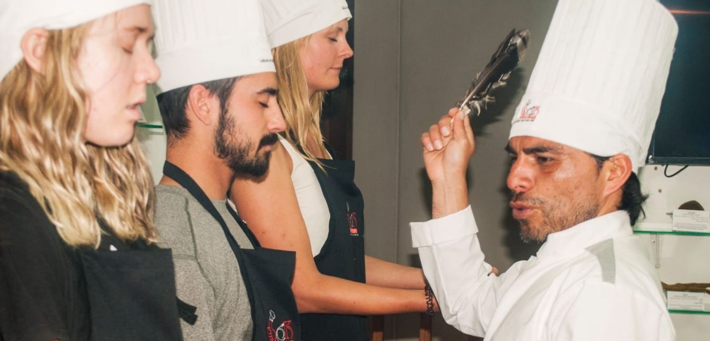
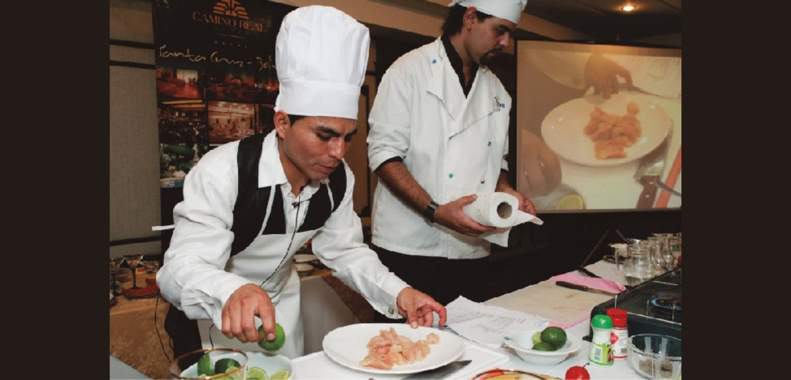

He was born on June 8, 1980, he grew up in the city of Trujillo - Peru, from a very young age he awakened his vocation for the art of cooking. He studied at the School of the European Union, specializing in Restaurant & Bar, with the particularity of dedicating himself to the world of Gastronomy and Tourism.
After completing his studies, he decided to visit the three Regions of Peru; Coast, Mountains and Jungle. His investigation of trying new flavors and learning about traditional recipes would last 16 months. There he would learn the different gastronomic traditions and ancestral customs of Peru.
With fines from 2002, he arrived in the city of Cusco, capital of the Inca empire, icon of culture and navel of the world, the beauty of its heritage and archaeological remains, its special attraction, its products and flavors, the colorful atmosphere, the surroundings. mystical, magical, energetic and natural conquered Joel and adopted a new place to live.
From this special dedication he decides to investigate a new trend gastronomic, at the end of 2004, using a lot of creativity, he proposed to write the work entitled NEW LATIN AMERICAN FLAVORS, "Bioenergetic Gourmet Cuisine" book and South America Tourism Guide ", book of 10 countries of the South American continent. The investigation and Publication of his work would take place in 7 years, in 2 tours of 10 countries in South America.
The first tour "TOUR SUDAMÉRICA 2004 - 2007", began at the end of 2004. It started in the triple border of the Amazon River, between Peru, Colombia and Brazil. Then I would visit Ecuador, Chile, Argentina, Uruguay, Paraguay and would culminate in Bolivia. The objective of the 2 tours is to research and collect from each country its culture, art, the richness of its food products, the variety of its gastronomy, various tourist destinations and the beauty of its handicrafts.
The second tour "TOUR SUDAMERICANA 2010 - 2011", would begin at the end of 2010. It would begin in Quito - Ecuador, then Bogotá - Colombia, La Paz - Bolivia, Santiago - CHile, Buenos Aires - Argentina Montevideo - Uruguay, Asunción - Paraguay, Rio de Janeiro - Brazil, Caracas - Venezuela and it would culminate in Lima Peru.
Tello is pleased to announce to the entire national and international market the next publication of his book NUEVOS SABORES LATINOAMÉRICA, promises to fill us with new flavors, perfumes, sensations, emotions and take us to wonderful and magical places from our entire continent, placing us in a lofty and leading position worldwide.
Also in Cusco he is the General Director of JTV E.I.R.L "Grupo Empresarial Perú". At the same time he will publish the Collection Guide Magazine entitled MULTIUNIVERSO PERÚ.
Por favor llamar al (084) 385-321
Escríbenos al whatsapp o chat que aparecen en la página (extremos inferiores)
Calle Atoqsaycuchi N° 790 San Blas, Cusco, Perú, 08000
Frente a la cancha de fútbol San Marcos
Lunes y Jueves: 10:00 - 22:00
Martes, Miércoles, Viernes, Sábado y Domingo: 11:00 - 22:00